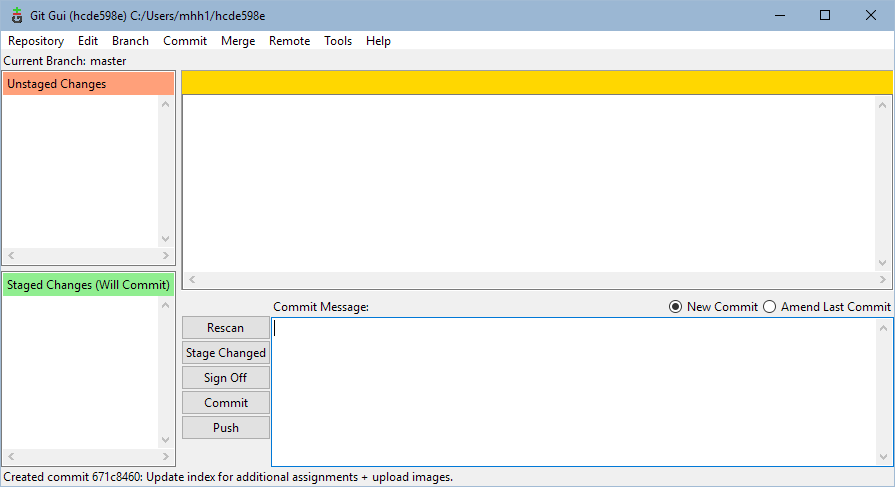

Michael Hsieh's Assignment 0!

For the 0th assignment in the class, we were required to create a nameplate for the instructors to view, as well as publishing our github page from the repository. I was able to complete this assignment on my own, other than reading some github documentation and watching a short in-class demonstration.
Construction of the nameplate was relatively straightforward. I tore a sheet of paper out of my sketchbook/notepad and folded it in half, parallel to its longest edge. I chose one of the outside faces that was created by this fold as the side which I would display towards the instructors and then wrote my first name using a mechanical pencil. I made sure that the letters were clear and large enough to read from a distance. If I were to do this over again, I might consider using a pen or sharpie instead, as well as adding additional flourish to the nameplate.
I have not previously worked with github in the past, so I listened attentively during Nadya's in-class demonstration of the tool. After creating my repository, I read through tutorials on how to publish the repository as a page. Though I originally went through command line to perform my git commands, I discovered that the installation of git also included a gui, which is able to perform the same commands without typing everything. I have since started using the GUI for all work that needs to be added to my repository.
